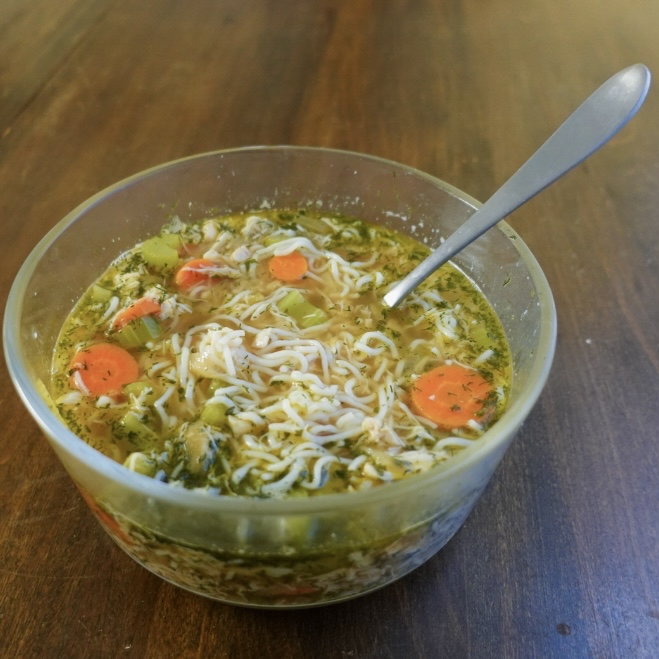

Low Calorie Chicken Noodle Soup

Description
This delicious low calorie chicken noodle soup will warm you up and satisfy your hunger for just 280 calories! Yields one gigantic serving.
Ingredients
- 1 clove garlic
- 50g onion
- 100g celery
- 70g carrot
- 240ml chicken broth
- 240ml water
- ground ginger
- dill
- parsley
- 0.5tsp lemon juice
- 112g ground chicken
- 8oz house foods shirataki noodle
- accent seasoning
- kosher salt
- 0 cal canola oil spray
Instructions
- Prep ingredients. Mince garlic, dice onions, slice carrots and celery, dice dill and parsley. Drain and rinse shirataki noodle.
- Set stovetop to medium-high heat. In a saucepan, cook minced garlic in canola oil spray until fragrant.
- Add more canola oil spray and cook onions until soft and slightly brown.
- Add celery, carrot, and a dash of salt to the saucepan. Cook until carrots and celery just start heating up.
- Add chicken broth, water, ground ginger, lemon juice, and parsley to the saucepan. Bring to a rolling boil.
- Turn down the heat to simmer and add the ground chicken. Simmer until chicken is cooked through.
- Turn off the heat. Add dill and shirataki noodle the saucepan. Add accent seasoning and salt to taste.